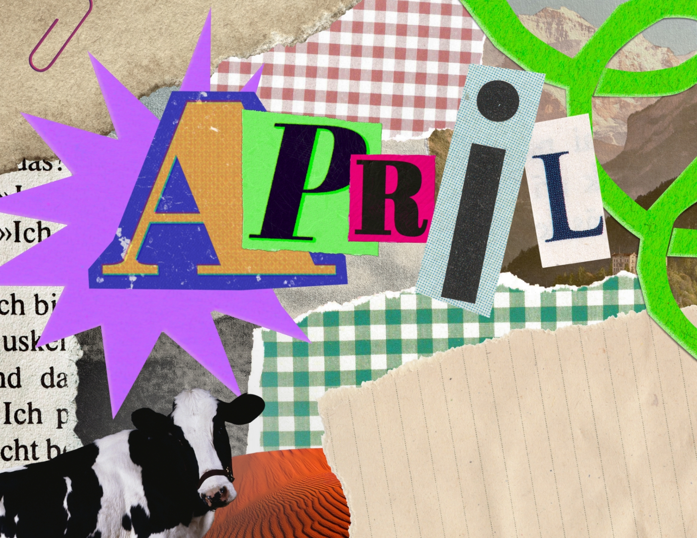
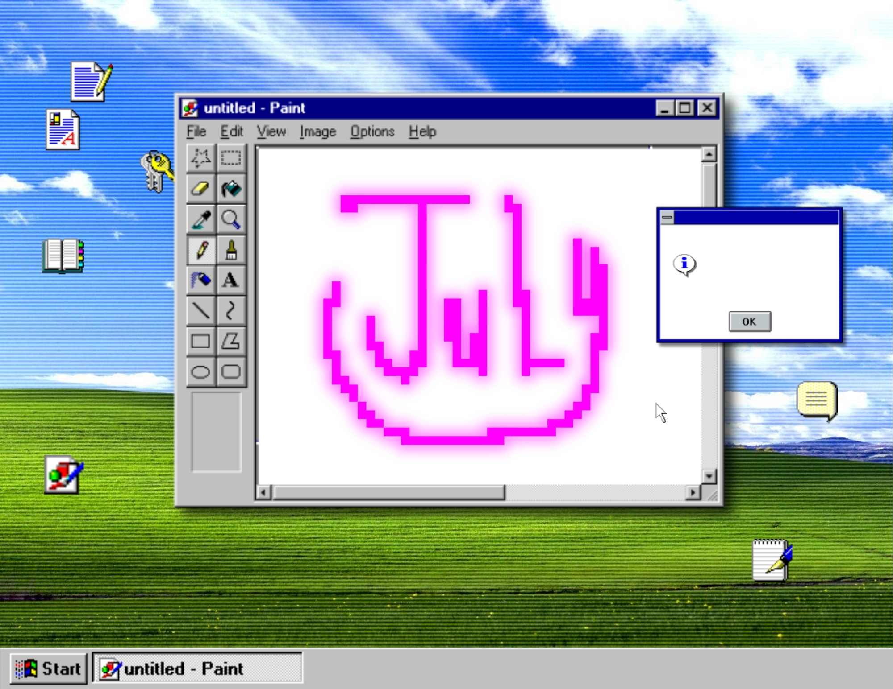
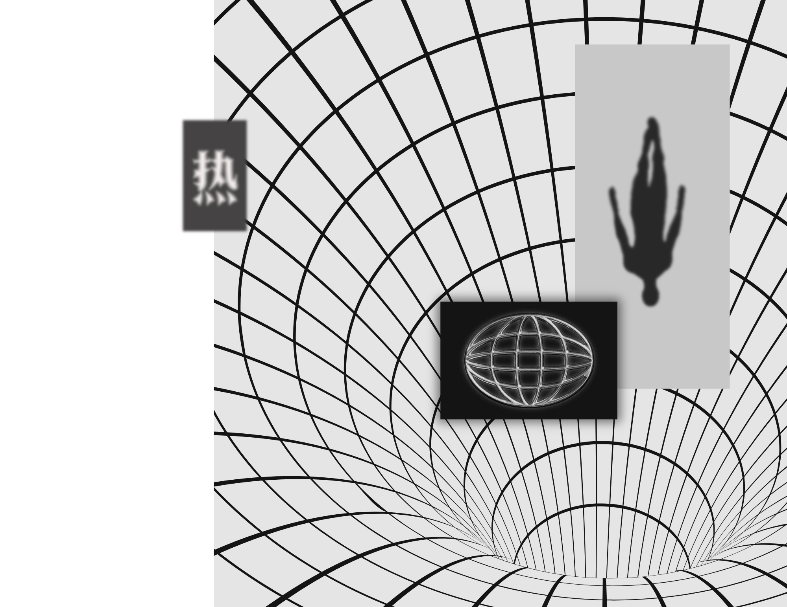
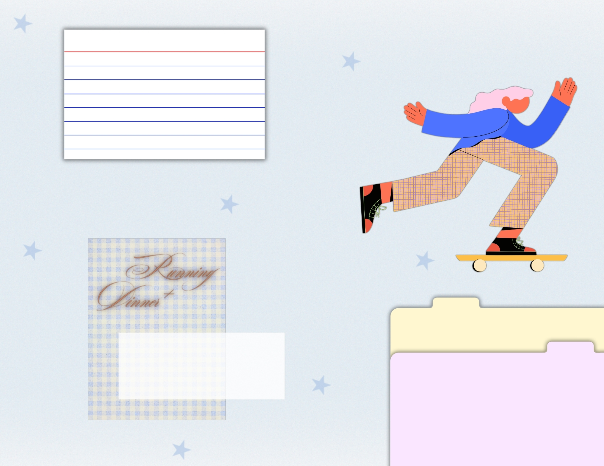

Digital Collage — 2026
Monthly Journal (TBC)
An ongoing project I started in 2026 by designing a journal template for the upcoming year. I plan to expand it with calendar pages, different note-taking templates, planners, trackers, and other layouts that combine practical use with my own visual style.



